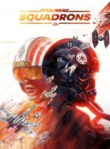

 |
|
| Tiempo de juego | No Jugado |
| Última actividad | Nunca |
| Añadido | 18/11/2025 14:16:14 |
| Modificado | 18/11/2025 14:17:10 |
| Estado de finalización | Not Played |
| Librería | Playnite |
| Fuente | 2TB DATOS |
| Plataforma | Microsoft Xbox One Microsoft Xbox Series PC (Windows) Sony PlayStation 4 |
| Fecha de lanzamiento | 02/10/2020 |
| Puntuación de la Comunidad | |
| Puntuación de la Crítica | 79 |
| Puntuación de usuario | |
| Género | Space combat |
| Desarrollador | Motive Studio |
| Editor | Electronic Arts |
| Característica | Multiplayer Single-player |
| Enlaces | Wikipedia Official website |
| Tag | [Game Engine] Frostbite 3 [People] artist: Mike Yazijian [People] composer: Gordy Haab [People] designer: James Clement [People] director: Ian S. Frazier [People] producer: Jean-Francois Poirier [People] producer: Susanne Hunka [People] producer: Thomas Mir [People] programmer: Patrick Lalonde [People] writer: Joanna Berry |
Star Wars: Squadrons is a space combat game set in the Star Wars universe, developed by Motive Studio and published by Electronic Arts. It was released for PlayStation 4, Windows, and Xbox One, on October 2, 2020, and for Xbox Series X/S on December 3, 2020. The game features both multiplayer game modes and a single-player campaign. Set after Return of the Jedi, the campaign alternates between the New Republic's Vanguard Squadron and the Galactic Empire's Titan Squadron, both of which become involved with the Republic's Project Starhawk; Vanguard Squadron wants to ensure its completion, while Titan Squadron attempts to destroy it.
The game received generally favorable reviews upon release, garnering praise for its gameplay, while facing some criticism over its story and lack of content. The game sold more than 1.1 million digital copies as of October 2020.
Star Wars: Squadrons is a space combat game, played from a first-person perspective. Players take control of starfighters from either the Galactic Empire or the New Republic navy. In these ships, they can utilise the movement of power between the ship's functions of weaponry, shields and engines to defeat their opponents in combat. Imperial starfighters do not have shields, resulting in other additions to their class so that the two teams would be balanced. As players earn more experience, they can unlock new weapons, shields, upgrades and various cosmetic items for the pilot and their ship. Completing Daily Challenges and Operation Challenges will also give players Glory, which can be spent on purchasing cosmetic unlocks. Players can check the ship's status, shields and powers by viewing the instruments in the ship's cockpit.
Gameplay is class-based, with both the New Republic and the Empire having four starfighter classes that the player can choose from: Fighter (TIE Fighter for the Empire and X-wing for the Republic), Interceptor (TIE Interceptor and A-Wing), Bomber (TIE Bomber and Y-Wing), and Support (TIE Reaper and U-Wing). An update added the B-Wing to the bomber class for the New Republic and the TIE Defender for the fighter class of the Galactic Empire.
The game features two multiplayer modes, and a single-player mode: The story mode is set after the Battle of Endor and the destruction of the second Death Star. The narrative alternates between two customizable pilots from the New Republic's Vanguard Squadron and the Empire's Titan Squadron. The game offers two online modes: Dogfight, which is a team deathmatch mode that supports 10 players, and Fleet Battles, in which two teams of up to 5 players compete to destroy each other's Capital Ships.
Following the destruction of Alderaan, Darth Vader orders all Imperial forces to hunt down any refugees who escaped the planet's destruction. Captain Lindon Javes of the Imperial Navy is tasked by Commodore Rae Sloane to lead Helix Squadron in finding and eliminating a convoy of refugees at Fostar Haven. Disgusted with his orders, Javes turns on his wingmen and disables their ships to protect the refugees. The convoy sends a distress signal to the Rebel Alliance, who dispatches Echo Squadron to assist in the convoy’s escape. After the battle, Javes defects to the Alliance, offering his knowledge of Imperial Fleet protocols to earn their trust.
Four years later, after the Alliance's victory in the Battle of Endor, the newly promoted Commander Javes assumes command of the New Republic cruiser Temperance and its elite fighter squadron, Vanguard Squadron. Assigned to the secret project known as Starhawk, the squadron undertakes missions to ensure Project Starhawk’s completion. It is later revealed that the project is a massive battleship constructed using parts from stolen Star Destroyers and has a powerful tractor beam.
Meanwhile, Imperial Captain Terisa Kerrill, Javes' former protégé and wingman from Fostar, is eager to take vengeance on him for his betrayal and is assigned to put an end to Project Starhawk before its completion. She assigns her own elite fighter squadron, Titan Squadron, to hinder the New Republic’s progress to complete the Starhawk. While Titan Squadron's initial operations are a success, an impulsive Kerrill is baited into a trap by Javes which nearly destroys her Star Destroyer, the Overseer. Unwilling to let Javes go, Kerrill forgoes repairs and instead hastily rearms the Overseer, planning to destroy the Starhawk even at the cost of her own life.
A surprise Imperial assault at the Nadiri Dockyards badly damages the Starhawk, although it manages to escape destruction. In an attempt to defend what’s left of the battleship, Javes personally takes command of Anvil Squadron but is later shot down and presumed dead. The Starhawk itself becomes damaged beyond repair in a secondary attack by Titan Squadron, although Vanguard Squadron, now led by General Hera Syndulla, make a last stand and use the remains of Starhawk to destroy the Imperial fleet by ramming it into an unstable moon. The plan is a success and, with the help of a surviving Javes, Vanguard Squadron manages to escape the explosion while Kerrill had left the battle earlier with her ship the Overseer after completing her mission of destroying the Starhawk prototype. Both Titan and Vanguard Squadrons are commended for their actions, with the New Republic planning to construct more Starhawk battleships while the Empire makes plans to regain control of the galaxy.
Initially conceived and pitched by James Clement and Patrick Lalonde to Motive Studio leadership, they were soon joined by Steven Masters to help develop the presentation for what would become Star Wars: Squadrons. As these 3 developers were still finalizing the single player campaign for Star Wars Battlefront II, a small group led by Ian Frazier laid the groundwork to build the production team.
The game was revealed on June 15, 2020 with the release of a trailer. It released for PlayStation 4, Windows, and Xbox One on October 2, 2020 with cross-platform play enabled. The PC version can be played in virtual reality using various VR headsets, with the PlayStation 4 version supporting PlayStation VR. All versions of the game have HOTAS support, with the console editions receiving support in a day one patch. By September 10, 2020, development for the game had reached "gold" status, meaning that it was ready to begin production on the physical editions of the game.
The game received enhancements for the PlayStation 5 and Xbox Series X and S, including improved lighting for the former and 4K support and high frame rate on the latter.
Following the June 15, 2020 trailer, a further gameplay trailer was released on July 18, 2020, and a trailer focusing on the single-player campaign was showcased at Gamescom 2020 on August 27, 2020.
On September 14, 2020, a CGI short titled Hunted was debuted on the Star Wars YouTube channel, being produced by Motive Studios in collaboration with Lucasfilm, Skywalker Sound, and Industrial Light & Magic. The short follows the Empire's retreat after a surprise attack by the New Republic, which marks yet another defeat for the Empire after the destruction of the second Death Star. Squadron Leader Varko Grey delayed his retreat in an attempt to defend a TIE Bomber pilot, yet the pilot's ship is destroyed and Grey is too late to escape with his Star Destroyer. Now the last TIE ship on the battlefield, he enters into a dogfight with an X-wing and manages to destroy it before crashing onto the planet's surface. He states that the war is not yet over as he is retrieved by Imperial forces.
If pre-ordering the game, additional cosmetic skins for the game's pilots and ships were included. The first selection of these are themed around the New Republic Recruit or Imperial Ace sets, and include a skin for each ship, a skin each for both Imperial and New Republic pilots, and a decal for both sets.
Following the promotional short Hunted, two additional skins for the X-wing and TIE Interceptor respectively, titled the Var-Shaa set, were added to the pre-order bonuses and are based on the appearances of the two ships from the short.
Star Wars: Squadrons received "generally favorable" reviews, according to review aggregator Metacritic. Some critics compared the game's favorable reception to the Rogue Squadron video games that were released during the late 1990s and early 2000s.
PC Gamer awarded the game a score of 83/100, praising the combat and flight mechanics but criticizing the lack of choices in the story and character development. Game Informer awarded it 8.25 out of 10, praising the multiplayer but saying the single-player "struggles to hit the target." Push Square awarded the game 6 out of 10, praising its flight mechanics, but criticizing the overall experience as lacking in excitement and content.
In Japan, the PlayStation 4 version of Star Wars: Squadrons sold 5,114 physical copies within its first week of release, making it the twelfth best-selling retail game of the week in the country. It was the 28th best selling game in Japan for the week of October 5, 2020 to October 11, 2020, selling 1,972 copies.
In the UK, Star Wars: Squadrons was the second bestselling retail game during its first week of release, and the bestselling digital game during the same week. It was the third best-selling game in Switzerland during its first week of release.
On PS4, it was the 2nd most downloaded game in October 2020 in the United States and Canada, and the 3rd in Europe. As of October 2020, the game sold over 1.1 million digital copies. In November 2020, it was the 18th most downloaded game on PS4 in the United States and Canada.
Star Wars: Squadrons was nominated for Best VR/AR at The Game Awards 2020. It won the Music of the Year award at The Game Audio Network Guild Awards It won Best PS VR Experience at the PlayStation.Blog 2020 Game of the Year Awards.